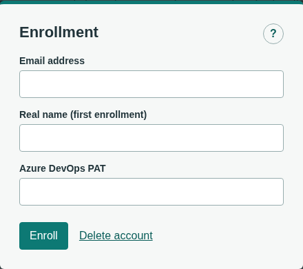

Permanent account guide
Enrollment & Account Access
One account. Remembered browsers. A private key you control.
Your email identifies your account; it is not a password or an email verification flow. Enrollment authorizes a browser and gives you an account key for future enrollment.
Your first enrollment
- Enter your own work email in Enrollment. Use the same email as before an upgrade to retain your existing account data and permissions.
- For first enrollment, enter your real name. For an already enrolled account, enter its current account key instead. The form checks your email to choose the required field.
- If Azure DevOps access requires a PAT, enter your own valid PAT in the separate masked field.
- Select Enroll. Save the account key displayed next in a password manager or another private secure location. Confirm that you saved it, then continue.

Another browser, or signing in again
After sign-out, cookie removal, expiry or browser revocation, use Enrollment again with your email and latest saved account key. Save the replacement key shown after success.
Each successful enrollment consumes the previous account key. Replace the old key in your secure storage. Other remembered browsers remain enrolled; revoke a lost browser separately.
A remembered browser can remain authorized for up to 90 days of inactivity. Normal authenticated use renews that period. Ordinary session expiry or server restart can renew access automatically from a valid remembered browser.
Lost a key or a browser?
Ask an administrator to use Users > Reset access and hand you the replacement key through a trusted channel. A reset revokes every remembered browser and active session while preserving account identity, permissions, PAT and saved data. Enroll using the replacement key, then save the next key the enrollment issues.
If a browser was lost or stolen, use Configuration > Remembered browsers to refresh the list and revoke it. Revocation removes that browser's access, not your account.
If no administrator can authenticate, contact the installation operator. Email alone cannot unlock an enrolled account. A backup restore may revive an older key; request Reset access if needed.
Azure access and signing out
A PAT rejected by Azure must be repaired using a valid PAT for that account. Enrollment does not grant Azure permissions. Your PlannerTool account key cannot repair a PAT.
Sign out in Configuration revokes this browser and clears its local drafts and preferences. Save work first. Server-saved views/scenarios and other enrolled browsers are retained.
Delete account requires the current account key and confirmation. It removes the account, PAT, server-saved views/scenarios and access from all browsers. It is not sign-out; the final administrator cannot delete their account.